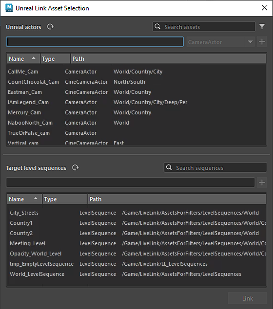

当在 Unreal Live Link 编辑器中单击对象旁边的“链接”(Link)按钮时，会出现“Unreal 链接资产选择”(Unreal Link Asset Selection)窗口。在此处，您可以将 Maya 对象直接连接到 Unreal 序列以流式传输动画。
此部分会有所不同，具体取决于您是链接角色还是链接灯光/摄影机/网格。在这两种情况下，您都可以在此处选择 Unreal 对象以链接到选定 Maya 对象。
使用此字段可按完整或部分名称字符串搜索资产。您还可以使用字段右侧的按钮按资产类型过滤结果。
您可以通过在顶部的文本字段中输入路径，然后选择 Unreal 对象类型并单击 + 按钮来创建新对象，而不是链接到 Unreal 项目中的现有对象。然后，该对象将添加到当前 Unreal 项目中的所需目录，并显示在“对象列表”(Object List)中供您选择。
按此按钮可更新当前 Unreal 项目中可用对象的列表。请注意，对于更复杂的场景，刷新过程可能需要较长的时间。
从此列表中选择一个对象以链接到选定的 Maya 对象。当链接角色时，确保所选骨架派生自选定的 Maya 骨架尤为重要（请参见导出到 Unreal）
您可以在此处选择 Unreal 动画序列（用于角色）或关卡序列（用于灯光/摄影机/网格）以链接到选定的 Maya 对象。
使用此字段可按完整或部分名称字符串搜索序列。
您可以通过在文本字段中输入路径并单击 + 按钮来创建新序列，而不是链接到 Unreal 项目中的现有序列。然后，序列将添加到当前 Unreal 项目中的所需目录，并显示在“序列列表”(Sequence List)中供您选择。
按此按钮可更新当前 Unreal 项目中可用序列的列表。请注意，对于更复杂的场景，刷新过程可能需要较长的时间。
选择对象和序列后，就可以单击“链接”(Link)按钮开始将动画数据流式传输到 Unreal。建立链接后，Unreal Live Link 编辑器中对象名称旁边的链接图标将变为黄色。成功后，它将变为绿色。